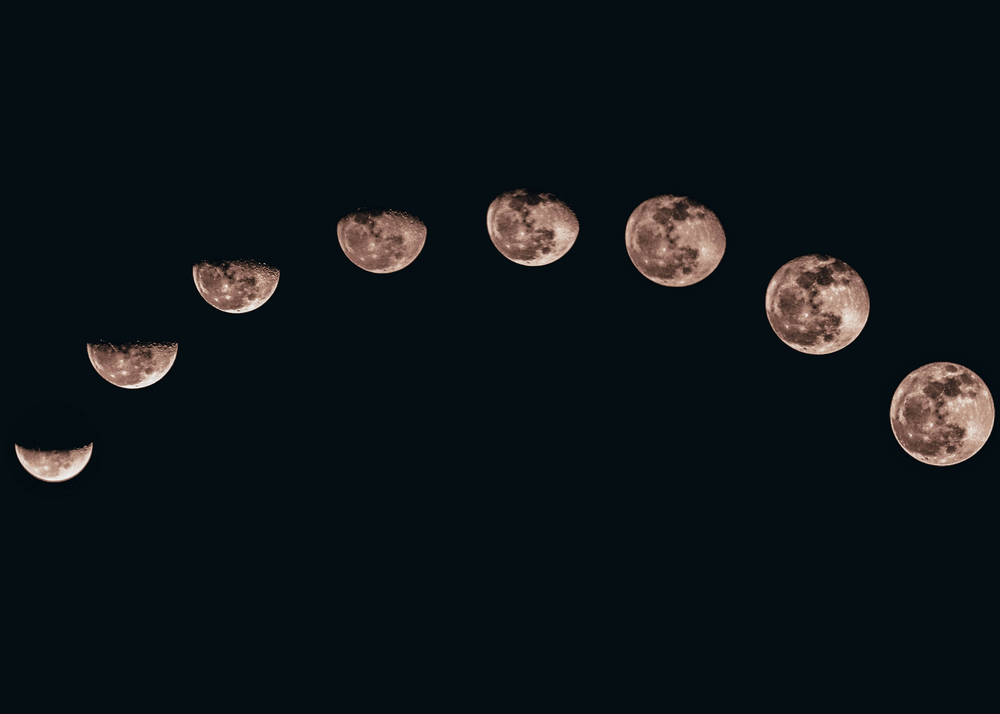
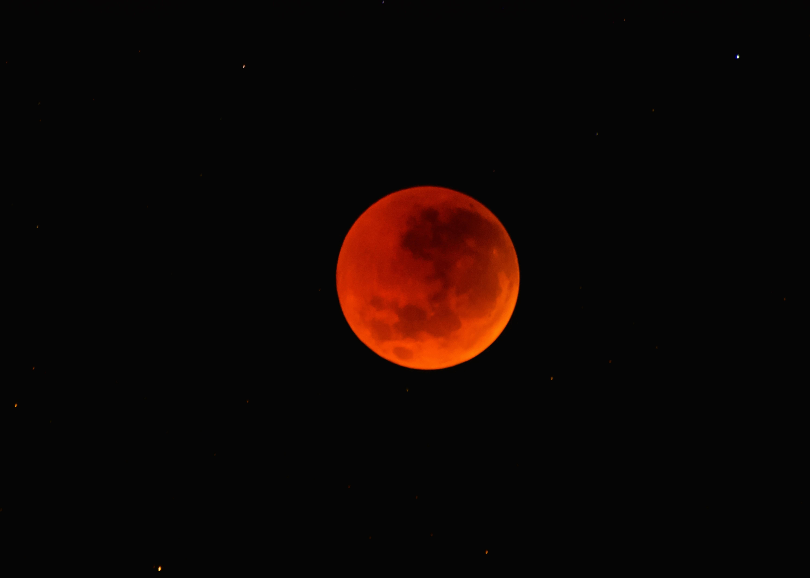
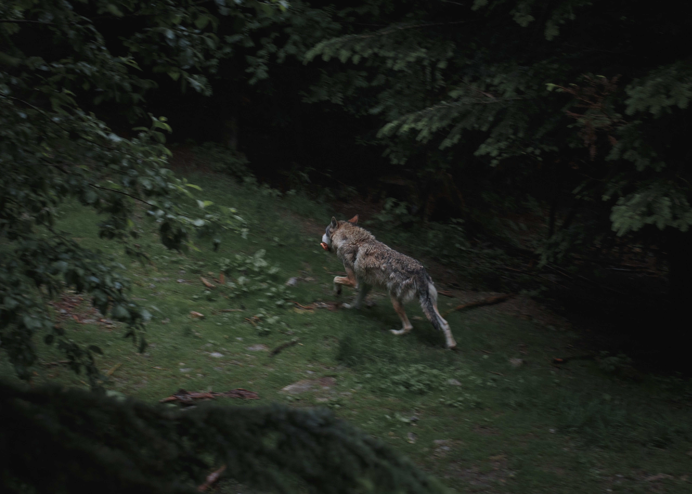

That's one small step for a man, one giant leap for mankind
- Neil Armstrong -20 de julio de 1969
Las fases de la luna
-
Luna nueva
También llamada Luna nueva astronómica o Luna negra, corresponde a la Luna nueva real; habitualmente, es imposible ver esta fase de la Luna a simple vista, ya que se encuentra oculta tras el resplandor solar, y solo es posible observarla cuando ocurre un eclipse total de Sol, lo cual acontece únicamente durante esta fase lunar. Cada día que pasa después de esta fase, la iluminación de la Luna es cada vez mayor. En la Luna nueva, la Luna recorre entre 0 y 45 grados de su órbita.
-
Luna creciente
Tiene forma de pequeña guadaña o cuerno. En el hemisferio norte, el lado derecho de la Luna aparece iluminado, mientras que en el hemisferio sur aparece iluminado el lado izquierdo. La iluminación de esta fase lunar puede ser entre 10 % y 23 %. En el hemisferio norte, la Luna creciente con mayor altitud se da entre los meses de abril y mayo, y la de menor altitud, entre octubre y noviembre, mientras que en el hemisferio sur todo es al revés. Recibe el nombre de luna creciente porque la porción iluminada de la Luna es cada vez mayor, con el paso de los días. En la luna creciente, la Luna recorre entre 45 y 90 grados de su órbita.
-
Cuarto creciente
Esta fase lunar se da cuatro días después de la Luna creciente. En esta fase de la Luna, el 50 % de su cara visible es iluminada por el Sol, por lo que la Luna muestra, en el hemisferio norte, la mitad derecha iluminada y la mitad izquierda oscura, y en el hemisferio sur muestra la mitad derecha oscura y la mitad izquierda iluminada. Esta fase lunar es visible en la mitad del día y en la mitad de la noche, por lo que tiene su orto aproximadamente a las 12 h., su cenit a las 18 h. y su ocaso, a las 00;00 h. En el cuarto creciente, la Luna recorre entre 90 y 135 grados de su órbita.
-
Luna gibosa creciente
Una vez pasada la fase del cuarto creciente, la Luna va tomando progresivamente, día tras día, una forma convexa por ambos lados en su parte luminosa, y va perdiendo ese "lado recto" que poseía durante la fase anterior (Luna nº 3).
-
Luna llena
Cuando la concavidad de la parte luminosa de la Luna logra verse en la totalidad de una de sus caras, hasta formar un círculo. Su salida es aproximadamente a las 6:00 h. p. m.; el cenit lo alcanza aproximadamente durante la medianoche y se oculta cerca de las 06:00 de la mañana. La Luna llena viene a marcar justo la mitad del mes lunar (14 días, 18 horas, 21 minutos 36 segundos).
-
Luna gibosa menguante
Pasada ya la fase correspondiente a la Luna llena, la parte luminosa de la Luna comenzará a menguar con el correr de los días, tomando así de nuevo (igual que la Luna nº 4) una apariencia de una Luna cóncava (gibosa) esta vez en su fase decreciente.
-
Cuarto menguante
Exactamente igual que el cuarto creciente, pero en sentido contrario. Además, tiene su cara a las 12 de la medianoche, alcanza el cenit en el cielo a las 6 de la mañana y su ocaso se produce a las 12 del mediodía, es decir, esta fase lunar corresponde al período de días durante el cual es posible observar a la Luna en el cielo durante las horas de la mañana.
-
Luna menguante
Conocida también como "creciente menguante" o "Luna vieja" (este último término poco conocido) ya que es idéntica a la Luna nueva visible, pero en sentido opuesto. La Luna menguante solo es posible verla de madrugada, hacia el este, justo por encima de la aurora o el alba y antes de que salga el Sol. Tiene apariencia de pequeña guadaña.
-
Luna negra
Se conoce como Luna negra o Luna oscura al período en que la Luna se encuentra de espalda al Sol en el cielo que no puede ser vista desde la Tierra, ni siquiera durante la puesta o la salida del Sol. La Luna está totalmente ausente en el cielo, ya que queda oculta por el resplandor solar. El término de "Luna negra" es utilizado para diferenciarlo precisamente de la Luna nueva tradicional o Luna nueva visible que es definido como el momento cuando la Luna Creciente es vista por primera vez en el cielo, justo después que el Sol se ha ocultado, este sucede, uno o dos días después de la conjunción Luna-Sol (Luna nueva verdadera).
Eclipses
La Luna pasa siempre entre la Tierra y el Sol y posteriormente atrás de la Tierra para realizar su órbita. Sin embargo, los eclipses son eventos poco frecuentes. Esto ocurre porque la órbita de la Luna está inclinada un poco más del 5° al plano de rotación de la Tierra, de forma que los astros en la mayoría de las veces no se alinean de forma necesaria como para que ocurra el fenómeno. Esta alineación también llamada sizigia ocurre solamente cuando la Luna está cerca del modo lunar durante la fase nueva o llena.
De esta forma, durante la nueva fase, puede haber un eclipse solar, en el cual la Luna pasa directamente delante del disco solar y proyecta una sombra sobre la superficie de la Tierra. Cuando se observa el disco completamente cubierto ocurre un eclipse total, mientras que si solamente una parte del disco fuera bloqueada ocurre un eclipse parcial. También está el eclipse anular, en el que el tamaño aparente de la Luna es menor que el disco solar. Por otro lado, durante la luna llena, la luna puede penetrar en la sombra de la Tierra, de forma que ocurre un eclipse lunar. Entonces la Luna, durante totalidad del eclipse, adquiere un color rojizo en función de la luz dispersada por la atmósfera terrestre.
Influencia cultural
El cambio de las fases de la luna, cuyo ciclo tarda entre 29 y 30 días es uno de los eventos regulares más evidentes que permitan el marcado del tiempo. Posiblemente, desde el Paleolítico, las comunidades humanas utilizaron el tiempo de la luna llena, debido a su brillo, para hacer salidas nocturnas. Los grupos de pescadores utilizaron las mareas como momento determinante para una buena pesca. Así, el ciclo lunar tiene un significado importante en lo que respecta al marcado de intervalos de tiempo, y las fases marcan períodos de vacaciones y rituales.
Los calendarios lunares fueron ampliamente utilizados en el mundo antiguo, tanto por los babilonios como los egipcios. El mes de alrededor de 30 días es una aproximación del ciclo lunar. No obstante, en algunos países islámicos, todavía utilizan oficialmente el calendario islámico, cuyo año tiene doce meses. Sin embargo, cada mes tiene exactamente un ciclo lunar, que comienza cuando la luna creciente es avistada poco después de la luna nueva. En consecuencia, el año islámico es once días más corto que el año trópico, utilizado en el calendario gregoriano.
La mayor parte de las leyendas mitológicas de civilizaciones incluyen referencias al satélite natural terrestre. En la mitología griega hay tres diosas asociados a la Luna: Artemisa, asociada con la luna creciente, Selene, vinculada a la luna llena y menguante y Hécate para las fases menguante y nueva. Para los romanos, la luna era asociada con Diana, protectora de la caza y de la noche. En la mitología tupí-guaraní la Luna era representada por la diosa Jaci.
Incluso en las culturas donde el satélite no tiene personalidad divina, la luna ejerce influencia sobre sus creencias, en función de su ciclo de continua renovación. Incluso en las culturas donde la Luna no está representada por las deidades personificadas, sus fases son asociadas a ciclos de abundancia, miseria, vida, muerte y renacimiento.
De acuerdo a la cultura popular, las fases del satélite tienen influencia, por ejemplo, en el momento de la siembra y la cosecha, el crecimiento del cabello, en la gestación y en el parto. La última creencia es motivada por el hecho de que la duración del ciclo lunar es similar al ciclo menstrual femenino. Sin embargo, no hay evidencia científica que apoye estas supersticiones. La Luna también tiene participación en varias leyendas folklóricas entre los cuales una de las más famosas es el hombre lobo, un hombre que, en noches de luna llena, se convierte en un lobo y va a la caza de carne humana.